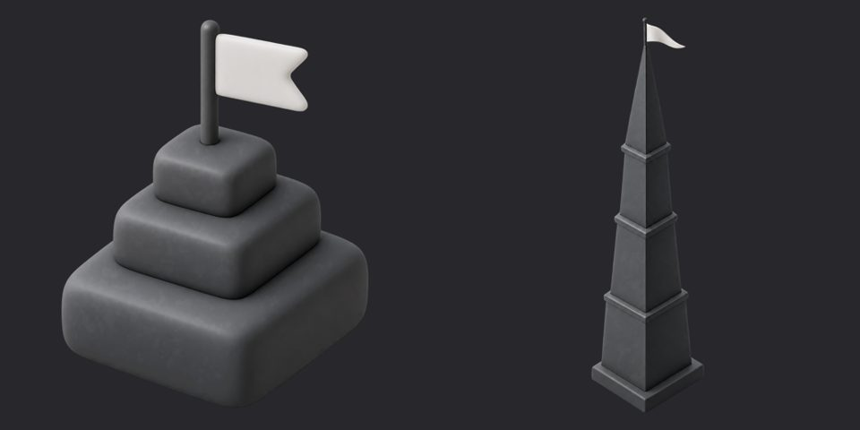

Утренний лист: образцы Карточек и связанные решения
По каждому образцу: что было → что стало (как в приложении), кадр, рекомендация. Подробный журнал — MOCKUPS_ALIGNED_TO_CODE_R1.md, блок A. Миниатюра — склейка «образец | приложение» на момент съёмки, по клику открывается целиком.
СРОЧНО К СБОРКЕ 16.10 — 8 решений
- Вырезать Learning V2 из выпуска 16.10?
да — вырезать: в магазин V2 всё равно не открыт (потолок сессий 0), вырез убирает 17 экранов V2 из сборки и фоновый посев аудио на старте; планировщик отправки завершений V2 оставлен намеренно, чтобы не потерять прогресс у тех, у кого он остался с версий до 10.10
Заготовка: handoff/r1_cut_learning_v2.patch + r1_cut_learning_v2_background.patch (описание r1_cut_learning_v2.md); накладывать только после вашего «да» - Гейт «приложение = макет»: вариант А+Б
да — А+Б: из 507 нарушений остаётся 251 (256 строк откладываются: пересъёмка 215, образец устарел 19, решает владелец 16, тон темы 6), к 16.10 сходится при темпе исправлений; честно: отложенное НЕ сверено, это ваше решение, а не проверка
Заготовка: handoff/r1_parity_gate_AB.patch (описание r1_parity_gate_AB.md); варианты А / Б / В — R1_PARITY_GATE_OPTIONS.md - Гейт сборки: блокирует или только предупреждает?
блокирует с флагом отложенного: сборка не идёт, пока есть нарушения вне отложенных корзин; крайний рычаг — PARITY_GATE_WAIVER=owner-ДАТА:причина (обход на одну сборку, печатается громко). Предупреждение без блокировки возвращает риск «выпустили с дефектом кода» — не рекомендую
Заготовка: scripts/release_precheck.mjs (гейт сверки запускается с --release=r1 --defer-triage после наложения патча А+Б) - Английский интерфейс: вариант А, Б или В
вариант А: при английском интерфейсе английский не предлагается языком изучения (старые уроки RU→EN англоязычному бессмысленны); вид онбординга не меняется, миграция сохранённой пары «en + en» — через экран выбора языка
Заготовка: handoff/en_ui_study_target_variant_A.patch (описание en_ui_study_target_variant_A.md); строку в 03_DECISIONS.md впишет тот, кто накладывает - Сайт и политика конфиденциальности (блок Г)
да — выкладывать с релизом: озвучка карточек одобренных наборов теперь уходит через наш сервер в OpenAI (§13 иначе станет неправдой) — без текста политики функции cardTts* выкладывать нельзя; плюс запись согласий. Файлы legal/*.json не тронуты до вашего «да»
Заготовка: handoff/legal_r1_policy_additions.patch (описание legal_r1_policy_additions.md); блок Г в DEPLOY_MORNING_2026-10-13.md - Выкладка 13.10, блоки А–В
А (три функции: dialogueV2TextTurn, dialogueV2SessionComplete, reEngagePushCron) — да; Б (premiumExpiryReminderCron) — только по отдельному «да», проверив дату прошлой выкладки командой из документа; В (английские поля сообщений «Важное от Phraseman») — только со слова владельца. Перед каждой выкладкой git status --short functions/ — пусто
Заготовка: DEPLOY_MORNING_2026-10-13.md (команда одной строкой, проверка после, откат) - Пик: иконка плитки на Главной — «пирамидка» (сейчас в приложении) или «узкий шпиль» (новый вариант Codex)
пирамидка — оставить: узкий шпиль в плитке 72 px получается тонким, флажок почти не виден (на картинке слева пирамидка, справа узкий шпиль; стиль «Глина» S2)
Заготовка: в приложении assets/images/v2art/{dark,light}/spire_tile.webp; вариант Codex от 16:34 — ART_STYLE_FOR_CODEX/trials/S2_clay/{dark,light}/spire_tile.webp; если выбрать «узкий»: node scripts/import_art_style.mjs S2_clay (без --skip spire_tile) - Тост серии на итоге диалога: строкой сверху или карточкой?
строкой сверху — оставить (коммит Дизайна 2c5b25ad2): раньше карточка тоста ложилась поверх кнопки «Готово» и закрывала её (dialogs-041); откат — одной строкой
Заготовка: коммит 2c5b25ad2 (откат одной строкой); кадр dialogs-041 после пересъёмки

Ждёт решения сейчас
- Копии «Тень» вместо старых образцов под замком — 10 стр.
- Карточки: образец или код? — 9 стр.
- Журнал диагностики в поддержке: включить или убрать из выпуска — 5 стр.
- Чип «EN ⌄» в каталоге — 5 стр.
- Пейволы: пробный период и цены в ₽ в образце — 5 стр.
- Значок «В набор» и «Мои наборы»: баночка (образец) или стопка слоёв (приложение) — 4 стр.
- ещё 13 вопросов ниже, у каждого рекомендация
Уже решено, в листе не спрашиваем: Пик (арт заказан у Codex, проба пяти стилей), фраза дня для es / de / it включена, английские объяснения — после R1.
56match всего
27проходят гейт сейчас
18из них утверждено вами
Считаются только строки, проходящие гейт. Ещё 29 «протухли» — код правился после кадра, Сверка уже переснимает.
| Если «да» | Сразу | После пересъёмки |
|---|
| Серия «Карточки» №54–74 | +2 | +7 и до +21 |
| Остальные страницы с образцами с приложения (энергия, Пик, состояния Карточек, онбординг, цены) | +7 | +5 |
| (в) Чип «EN ⌄» | 0 | до +5 |
| (в) Копии «Тень» | 0 | до +10 и +1 |
| (в) Пейволы: образец устарел | 0 | до +5 |
| (в) Окно «Выйти» | 0 — принять по коду | — |
| Итого при «да» на всё | 18 → 27 | до 56, до 94 если других отличий не останется |
Вопрос про чип «EN ⌄»
Чип языка «EN ⌄» и тонкая линия под верхней строкой в каталоге сообщества
да — оставить в приложении и дорисовать в образецБылов утверждённом №25 вверху только стрелка «назад»
Сталов приложении справа вверху чип «EN ⌄» и тонкая линия под верхней строкой
В вашем packs-simple.html (04.10) справа вверху уже стоят поиск и «EN ⌄» — приложение с ним согласуется. Закрывает расхождение в пяти строках: cards-014, 015, 016, 017, 048. Если «нет» — чип надо убрать из приложения.
Серия «Карточки» — cards-v2.html, кадры №54–74
№54
Сохранённые — загрузка
даБылокадра не было (только устаревший цветной)
Сталочетыре плашки-заглушки под заголовком «Сохранённые 0»
Строки реестра: cards-031
Ваш ответ: ☐ да ☐ нет
№55
Подготовка тренировки — загрузка наборов
даБылокадра не было
Сталошапка «Блиц», плитки-заглушки в два столбца, пилюля «24/30», «Начать» неактивна
В приложении на этом кадре «Режим недоступен» — вопрос Дизайну: флаг режима или дефект.
Строки реестра: cards-075
Ваш ответ: ☐ да ☐ нет
№56
Новая карточка — не удалось сохранить
даБылокадра не было
Сталоформа и тост-ошибка «Не удалось сохранить карточку.» у нижнего края
Кнопка «Повторить» в коде есть, но на тосте не рисуется — вопрос Дизайну.
Строки реестра: cards-062
Ваш ответ: ☐ да ☐ нет
кадра приложения пока нет — нарисован по коду
№57
Карточка не найдена
даБылокадра не было
Сталоплитка с лупой, «Карточка не найдена», «Назад»
Строки реестра: cards-063
Ваш ответ: ☐ да ☐ нет
кадра приложения пока нет — нарисован по коду
№58
Новый набор — шторка «Новая карточка»
даБылокадра не было
Сталотри поля, «Ещё одну» и «Добавить» поверх «Нового набора»
Строки реестра: cards-024
Ваш ответ: ☐ да ☐ нет
№59
Каталог — загрузка
даБылокадра не было
Сталочетыре плитки-заглушки без текста под поиском
Строки реестра: cards-047
Ваш ответ: ☐ да ☐ нет
№60
Сохранённые — недоступно
даБылокадра не было
Стало«Сейчас недоступно · Проверь интернет · Попробовать снова»
Строки реестра: cards-039
Ваш ответ: ☐ да ☐ нет
кадра приложения пока нет — нарисован по коду
№61
Каталог — нет сети (по коду)
даБылов №44 для каталога стоял текст «Сейчас недоступно»
Стало«Нет сети» без подписи и кнопки, как в коде
Кадра приложения нет, нарисован по коду.
Строки реестра: —
Ваш ответ: ☐ да ☐ нет
№62
Каталог — поиск, действия над набором
даБылокадра не было
Сталопоиск «Fam», «Найдено 1», меню «Добавить себе / Пожаловаться / Не показывать мне»
Зависит от решения про «EN ⌄» (вопрос выше).
Строки реестра: cards-015
Ваш ответ: ☐ да ☐ нет
№63
Каталог — пока нет публикаций
даБылостоял кадр «Ничего не найдено» (другое состояние)
Стало«Здесь появятся наборы после публикации.» с плиткой людей
Зависит от решения про «EN ⌄».
Строки реестра: cards-016, cards-048
Ваш ответ: ☐ да ☐ нет
№64
Мои наборы — удалить набор
даБылокадра не было
Сталоокно «Удалить набор» с красной кнопкой поверх «Моих наборов»
Строки реестра: cards-012
Ваш ответ: ☐ да ☐ нет
№65
Мои наборы — набор удалён
даБылокадра не было
Стало«Мои наборы 3» и тост «Готово · Набор удалён.» у нижнего края с галочкой
Строки реестра: cards-045
Ваш ответ: ☐ да ☐ нет
№66
Мои наборы — поиск: ничего не найдено
даБылокадра не было
Сталополе поиска со словом и «Ничего не найдено»
Строки реестра: cards-046
Ваш ответ: ☐ да ☐ нет
№67
Сохранённые — стопка
даБылорисовалась флип-карточкой шторки
Сталопочти квадратная карточка, два слоя стопки под ней, озвучка справа сверху, стрелки ‹ ›
Строки реестра: cards-008
Ваш ответ: ☐ да ☐ нет
№68
Сохранённые — стопка, оборот
даБылото же
Сталото же, «RU» по центру над переводом
Строки реестра: cards-037
Ваш ответ: ☐ да ☐ нет
№69
Сохранённые — режим выделения
даБылокадра не было
Стало«Отмена · 0 / 64», сетка, подсказка «Выбери ещё 10 карточек…», «Создать набор» неактивна, «Удалить»
В приложении подсказка наезжает на нижний ряд карточек — это дефект кода, образец показывает, как должно быть.
Строки реестра: cards-007
Ваш ответ: ☐ да ☐ нет
№70
Сохранённые — удалить 3 карточки
даБылокадра не было
Сталоокно «Удалить 3 карточки?» поверх режима выделения
Строки реестра: cards-035
Ваш ответ: ☐ да ☐ нет
№71
Сохранённые — долгое нажатие → «Удалить»
даБылокадра не было
Сталошторка с одной красной строкой «Удалить» поверх затемнённого списка
Строки реестра: cards-034
Ваш ответ: ☐ да ☐ нет
№72
Сохранённые — выделено 3, «выбери ещё 7»
даБылокадра не было
Сталотри отмеченные карточки, подсказка «Выбери ещё 7 карточек…» на плашке
Строки реестра: cards-036
Ваш ответ: ☐ да ☐ нет
№73
Сохранённые — поиск: ничего не найдено
даБылокадра не было
Сталополе поиска со словом и ✕, плитка с лупой, «Ничего не найдено · Попробуй другое слово.»
Строки реестра: cards-038
Ваш ответ: ☐ да ☐ нет
№74
Новый набор — пусто
даБылобыл только заполненный №22
Сталоплейсхолдер названия, уровень не выбран, «Карточки 0», «+ Карточка», внизу «+ Первая карточка»
Строки реестра: cards-067
Ваш ответ: ☐ да ☐ нет
Остальные образцы, нарисованные с приложения — да / нет по каждой строке
Образец рисовала сессия «Макеты» по приложению (кадр слева). «Да» = образец принят как эталон.
paywalls-014
проходит гейтЦена и покупка / Ожидание банка или родителя · отдельный диалог
Ваш ответ: ☐ да ☐ нет
paywalls-015
проходит гейтЦена и покупка / Результат покупки неизвестен · отдельный диалог
Ваш ответ: ☐ да ☐ нет
energy-modes-009
ждёт пересъёмкиДва режима энергии · Слова / Режим Б · слова — занятие
Ваш ответ: ☐ да ☐ нет
energy-modes-010
ждёт пересъёмкиДва режима энергии · Неправильные глаголы / Режим Б · неправильные глаголы — занятие
Ваш ответ: ☐ да ☐ нет
onboarding-007
ждёт пересъёмкиОнбординг / Онбординг · Сейф: «Твои данные — только твои»
Ваш ответ: ☐ да ☐ нет
onboarding-018
ждёт пересъёмкиОнбординг / Онбординг · Уведомления
Ваш ответ: ☐ да ☐ нет
spire-gap-016
проходит гейтПик · Итог недели / Итог недели — остаёшься
Ваш ответ: ☐ да ☐ нет
cards-gap-014
проходит гейтКарточки / Твой набор одобрен
Ваш ответ: ☐ да ☐ нет
cards-gap-015
проходит гейтКарточки / Твой набор отклонён (с комментарием)
Ваш ответ: ☐ да ☐ нет
cards-gap-017
проходит гейтКарточки / Набор снят с продажи
Ваш ответ: ☐ да ☐ нет
cards-gap-037
проходит гейтКарточки / Голос озвучки — загрузка
Ваш ответ: ☐ да ☐ нет
onboarding-030
ждёт пересъёмкиОнбординг · экран цены Plus / Онбординг · Цена: «Больше предложений»
Ваш ответ: ☐ да ☐ нет
Остальные решения из блока A
№44 «Каталог без сети» (правка D158)
даБыло«Нет сети · Проверь подключение · Повторить»
Стало«Сейчас недоступно · Проверь интернет · Попробовать снова»
Это текст экрана «Сохранённые» (№60). Для каталога сделан отдельный №61. Решить: оставить №44 как «Сохранённые без сети» или убрать.
Копии «Тень» к четырём страницам под замком (mistakes-panel, cards-section, cards-gallery, packs-simple)
даБылостарая подача: кольца, цветные градиенты, «аврора»
Сталотот же состав и номера, подача «Тень»: плашки с тенью, без колец и кромок
«да» — строки переедут на копии, около 24 живых строк перестанут быть вечным diff по стилю. «нет» — старая подача, diff по стилю остаётся. Копии: mistakes-panel.shadow.html, cards-section.shadow.html, cards-gallery.shadow.html, packs-simple.shadow.html.
Строка cards-section-004 «Хаб — лимит исчерпан (Free)»
даБылоснята как «заменено cards-v2» (ошибочно)
Сталовозвращена в работу, привязка к cards-section №4
Вариант А при лимите и есть cards-section №4.
Главная в shadow-style-etalon.html
даБылолинейные значки на плитках и в нижней панели
Сталоплитки с артом и нижняя панель как в приложении, без подписей
Сделано по вашему приказу 12.10; подтвердить для порядка.
Конфликт: community.html (29.09) и packs-simple.html (04.10)
даБыловкладки и каталог по community.html
Сталовкладки «Пик · Друзья · Наборы» и каталог по packs-simple.html; «Друзья» по community.html
Код уже следует packs-simple (ваше решение 04.10). Подтвердить версию community.html.
(в) Решает владелец
Эти строки чинить в приложении нельзя: образец устарел или спорный. Подробности — R1_CODE_DEFECTS_FROM_PARITY.md, раздел «(в)».
Пробный период без ленты шагов («Сегодня / День 1 / День 3»)
оставить как в приложении: заголовок «Plus бесплатно на 3 дня» и список «Что входит», а ленту трёх шагов убрать из образца — срок пробного приходит от магазина и заранее не гарантирован (D117/D158)paywall-gap-004
в образце лента «Сегодня / День 1 / День 3» с напоминанием и датой списания, в приложении заголовок «Plus бесплатно на 3 дня», список «Что входит» и таблица «Free и Plus»
paywall-gap-005
тот же вопрос про пробный период: в образце выбранный тариф «Месяц» и цены в рублях, в приложении справочные цены в евро
Управление подпиской: кнопка «Перейти на годовой план»
решить, нужен ли апселл годового плана на экране управления подпиской: в образце он есть, в приложении нет; рекомендация — не добавлять до релиза (цена и период берутся из магазина)profile-017
в образце на экране «Управление Plus» есть строка «Перейти на годовой план · дешевле в пересчёте», в приложении её нет
Свободный разговор: открывать репликой собеседника или карточкой «Что можно спросить»
оставить как в приложении (первая реплика собеседника: живее, нет пустого экрана) и обновить образец; подсказку про изучаемый язык при желании дать одной строкой над полемdialogs-045
в образце плашка «Что можно спросить» с лампочкой, в приложении сразу первая реплика собеседника «Hi! What would you like to talk about today?»
Промокод: показывать срок («30 дней» / «навсегда») или единый экран «Доступ подтверждён»
оставить единый экран приложения («Доступ подтверждён», без «30 дн.» / «навсегда») и обновить образец: человеку после ввода кода важен сам факт доступаoverlays-campaigns-007
промокод со сроком: в образце экран с отдельным сроком («30 дн.»), в приложении единый экран «Доступ подтверждён» без срока; то же для «навсегда» (overlays-campaigns-008). Рекомендация: оставить единый экран, образец обновить.
overlays-campaigns-008
в образце отдельный кадр «Бессрочный результат», в приложении один и тот же экран «Доступ подтверждён» для любого срока
Журнал диагностики в поддержке: включить или убрать из выпуска
убрать из r1 (рекомендация Дизайна): журнал выключен решением 30.09, включение требует правки политики приватности до релиза; образцы с «Посмотреть / Скрыть» снимаются с r1settings-gap-022
поддержка, диагностика раскрыта: в образце «Скрыть» и список записей, в приложении их нет — журнал выключен (30.09).
settings-gap-035
поддержка, «Отправить» неактивна: в образце ссылка «Посмотреть» в карточке диагностики, в приложении нет — журнал выключен.
settings-gap-036
поддержка, не отправилось: то же — «Посмотреть» нет, журнал выключен.
profile-013
в образце карточка диагностики с галочкой «Прикрепятся только недавние технические действия», в приложении «Журнал технических действий сейчас выключен»
profile-014
то же для раскрытой диагностики: журнал выключен решением 30.09
Вид переключателей: тёмная дорожка и белый бегунок (приложение) или белая дорожка и чёрный бегунок (образец)
да — оставить вид приложения и обновить образец: он один на всех экранах Настроек и совпадает с выбранным стилем «Тень»settings-gap-014
настройки обучения: включённый переключатель — тёмная дорожка и белый бегунок справа в приложении, белая дорожка и чёрный бегунок в образце.
settings-gap-015
то же в нижней части настроек обучения (звук, скорость).
Главная кнопка на экранах ввода кода: светлая (приложение) или мятная (образец)
да — оставить светлую главную кнопку, как на остальных экранах приложения: мятный нужен только для акцента Plus на пейволеoverlays-campaigns-009
промокод онбординга: кнопка «Активировать» светлая в приложении, мятная в образце.
overlays-campaigns-026
код друга: кнопка «Применить код» светлая в приложении, мятная в образце.
Значок «В набор» и «Мои наборы»: баночка (образец) или стопка слоёв (приложение)
да — оставить стопку слоёв приложения и обновить образец: тот же значок уже стоит у счётчика «50/50» в шапке, один значок во всех местахcards-v2-013
пустые «Мои наборы»: на плитке в образце баночка, в приложении стопка слоёв.
cards-v2-020
шторка карточки: у «В набор» в образце баночка, в приложении стопка слоёв.
cards-v2-046
новая карточка: у строки «Мои карточки» в образце баночка, в приложении стопка слоёв.
cards-v2-048
меню «⋯»: у «Показать стопкой» в образце баночка, в приложении стопка слоёв.
Кнопка «Очистить память этого языка»: красная (приложение) или светлая (образец)
да — оставить красную в приложении и обновить образец: действие необратимо, красный уже стоит у «Удалить набор» и «Удалить» в шторке карточкиdialogs-gap-002
память диалогов (Plus, пусто): кнопка «Очистить память этого языка» красным текстом в приложении, светлая в образце.
dialogs-gap-003
память диалогов (без Plus): та же кнопка красным в приложении, светлая в образце. Отдельно — масштаб кадра: блок в приложении ниже на ≈95 px, заголовок крупнее (≈34 против ≈28 в масштабе образца), пояснение в четыре строки вместо трёх; Дизайн считает это масштабом кадра и в код не гонит. Рекомендация: красную оставить, масштаб принять как рендер Android.
Энергия в шапке Диалогов — иконка без фона (приказ 01.10)
убрать пилюлю «⚡ N» из образца dialogs.html: приложение следует приказу владельца от 01.10 (EnergyBar.tsx — только значок и число)dialogs-008
в образце dialogs.html «⚡ N» в пилюле с фоном; приказ владельца от 01.10 — иконка энергии без фона нигде, только значок и число. Приложение следует приказу.
Хаб «Диалоги»: стрелка «‹» назад на Главную
да — оставить в приложении и дорисовать в образец dialogs.html (без стрелки назад только жестом)dialogs-001
в образце dialogs.html (телефон 1) стрелки «‹» нет, в приложении она есть: хаб открывается с Главной, без стрелки назад только жестом. Высота карточек категорий — шкала D145, перенос подписи на 411 dp принят.
dialogs-002
то же для хаба Plus: стрелка «‹» есть в приложении, нет в образце.
Чип «EN ⌄» в каталоге
да — оставить в приложении и дорисовать в образецcards-014
чип «EN ⌄» в каталоге — вопрос владельцу
cards-015
чип «EN ⌄» в каталоге — вопрос владельцу
cards-016
чип «EN ⌄» в каталоге — вопрос владельцу
cards-017
чип «EN ⌄» в каталоге — вопрос владельцу
cards-048
чип «EN ⌄» в каталоге — вопрос владельцу (+ проверить чипы уровней при пустом каталоге)
Копии «Тень» вместо старых образцов под замком
да — строки переедут на копии «Тень»; различия данных останутся как данныеcards-section-007
образец под замком в старой подаче (цветной, «Аврора») — копии «Тень»
cards-section-009
образец под замком в старой подаче — копии «Тень»
cards-section-024
образец под замком в старой подаче — копии «Тень»
cards-section-028
образец под замком в старой подаче — копии «Тень»
cards-section-032
образец под замком в старой подаче и другой вариант хаба — копии «Тень»
cards-section-033
образец под замком: данные и «Мои карточки» — копии «Тень»
cards-section-044
образец под замком в старой подаче — копии «Тень»
cards-section-045
образец под замком в старой подаче — копии «Тень»
cards-v2-001
образец под замком: хаб в цветной теме, решение владельца «только цвет — цвет темы»
packs-simple-004
образец под замком: тон кнопки и порядок слов (данные набора) — копии «Тень»
Пейволы: пробный период и цены в ₽ в образце
образец устарел — обновить под код (D117/D158: пробный только из магазина, цены справочные в €)paywall-gap-001
образец показывает пробный период и цены в ₽, код верен (D117/D158: пробный только из магазина) — образец устарел
paywall-gap-007
то же: лента пробного и ₽ в образце, в коде пробного нет
paywall-gap-008
то же: лента пробного и ₽ в образце
paywall-gap-009
то же: лента пробного и ₽ в образце
paywall-gap-010
то же: лента пробного и ₽ в образце
Видео: вкладки «Все видео» и селектор канала «PE Phraseman» (образец) — в приложении один канал и живая «Премьера сейчас»
оставить как в приложении (один канал, «Премьера сейчас» вместо «Скоро») и обновить образец video.html: вкладок и селектора канала в приложении нет, это функции и данные, а не вёрстка (Дизайн, 12.10)video-001
в образце video.html вверху вкладки «Все видео» и селектор канала «PE Phraseman», а вместо живой премьеры «Скоро»; в приложении один канал, вкладок и селектора нет, а премьера показывается как «Премьера сейчас» — это функции и данные, не вёрстка.
Карточки: образец или код?
по каждой строке рекомендация ниже: в большинстве случаев оставить приложение и обновить образец (общие вопросы про чип «EN ⌄» и «+» уже решены выше)cards-020
жалоба на набор: в приложении окно по центру поверх каталога «Сообщество» (список причин без радиокнопок и ✕), в образце шторка снизу с радио и полем. Рекомендация: оставить окно приложения и обновить образец cards-states (он под замком владельца — решение ваше).
cards-028
«Из видео»: в образце размытые силуэты на обложках и «24 фраз», в приложении цветные иллюстрации блокнота и верное «24 фразы». Рекомендация: оставить арт и склонение приложения, образец обновить (силуэты — устаревшая заглушка).
cards-v2-018
«Все ролики»: те же обложки (силуэты против иллюстраций), у первого ролика в образце полоса просмотра, в приложении нет (ролик не начат). Рекомендация: оставить приложение, образец обновить; полосу просмотра в образце убрать.
cards-gap-035
каталог «не сохранился на телефоне»: в приложении «+» справа от заголовка и выбран фильтр «Новые», у карточек один чип слова, тост с «!» в заливном круге. Рекомендация: оставить как в приложении (чип «EN ⌄» — общий вопрос выше), образец дорисовать.
cards-gap-034
каталог «набор ещё не скачан»: нужен тост после тихих повторов (≈5 с) — кадр снимали раньше; в приложении, как и на соседних строках, есть «+» и «EN ⌄». Рекомендация: переснять с паузой 5,5 с; различия шапки — как у cards-gap-035 (оставить приложение).
cards-gap-026
публикация, суточный лимит: рядом с «+» в приложении есть «⋮» (в образце только «+»), тост крупнее и в три строки. Рекомендация: оставить как в приложении и дорисовать «⋮» в образец.
cards-gap-016
«Нужна доработка»: окно выше из-за комментария модератора, «Закрыть» светло-серая, хаб за окном другой (образец хаба устарел: «Продолжить · Layover», «Сохранённые 64»). Рекомендация: оставить приложение; образец хаба перерисовать в новой подаче.
cards-025
выбор наборов для тренировки: в образце отмечены два набора и есть плитка «Мои карточки · 12 карточек», в приложении один набор и плитки нет (у тестового аккаунта нет личных карточек). Рекомендация: оставить как в приложении; образец — данные демо, не отличие кода.
cards-033
разовая подсказка в «Сохранённых»: кадра пока нет — ссылка без шагов («уникальна: нет»). Рекомендация: образец оставить (нарисован с приложения), шаги дописать и снять — до решения владельца ничего не менять.
Хаб «Диалоги»: остаток реплик — пилюля «30/30» под энергией (образец) или строка выше карточек (приложение)
оставить как в приложении (строка с остатком выше карточек читается без лишней пилюли в шапке) и обновить образец dialogs.html; если нужна пилюля под энергией — это правка кода по образцуdialogs-005
в образце dialogs.html под энергией пилюля «30/30» (осталось реплик диалога из 30), в приложении остаток показан строкой выше карточек, пилюли под энергией нет; «Свободный разговор · PLUS» есть в обоих (замечание снято 12.10). Рекомендация: оставить строку приложения, образец обновить.
Экран урока: нужен ли новый вид (шапка «Урок N · уровень», полоса прогресса сверху, поле ответа) или оставляем как есть
по умолчанию — оставляем как есть (рекомендация Дизайна): образец energy-modes перерисован под код lesson1; новый экран урока — отдельный заказ с макетом экрана целикомenergy-modes-016
экран урока: образец energy-modes перерисован под код lesson1 (шапка «Урок N», ⚡/♥♥♥/монеты, «Собери фразу: … Esto …», 6 вариантов, «1/50» и панель «50/50 · Теория · Устно · Отменить») — решение Дизайна 12.10; вопрос владельцу только про НОВЫЙ вид экрана урока (по умолчанию оставляем как есть)
Окно «Выйти» с экрана аккаунта
снимок невозможен без привязки аккаунта (привязывать ради снимка нельзя) — принять по кодукадра нет — снимок невозможен без привязки аккаунта
overlays-runtime-018
нужен привязанный тестовый аккаунт; привязывать ради снимка нельзя — решение владельца
Нельзя снять — 19 строк
Эти строки pending снять нельзя (группа 3 из R1_PENDING_COVERAGE.md). «Принять по коду» = закрыть строку без кадра с пометкой.
Нужна store-сборка — 4 строки (diff, на эмуляторе недостижимо)
принять по коду; снимать только на store-сборке с аккаунтом магазинаprofile-016
Управление Plus, годовая: нет строки «Следующее списание · дата» — её даёт магазин, которого на эмуляторе нет
paywalls-019
то же, что profile-016 (тот же экран, другая строка реестра)
profile-024
Восстановление, покупок не найдено: на эмуляторе тост «не удалось проверить покупки» вместо шторки «Покупок не нашлось»
paywalls-022
то же, что profile-024
Пишет в прод — 6 строк
принять по коду (рекомендуем): кадр не снимаем. «Да» Сверке — только если вы разрешите ровно одну тестовую запись с пометкой «тест» и её удаление после съёмкиcards-041
Отправка в сообщество: состояние «идёт отправка» видно только во время реального вызова — это заявка в модерацию прода
cards-054
Меню своего отклика: сначала нужно отправить публичный отклик
cards-056
«Отправляется / не отправлено»: отправка публичного отклика (в авиарежиме — «не отправлено»)
cards-058
Жалоба на отклик отправлена: реальная жалоба модераторам
cards-059
Жалоба на набор отправлена: реальная жалоба модераторам
cards-gap-025
Публикация — отправлено: реальная заявка на публикацию набора
Состояния нет в коде — 4 строки
убрать из r1: образец отстал от кода. Если состояние нужно — сделать после выпускаcards-027
Кнопка языка в подготовке тренировки: на этом экране выбора языка набора нет, кнопка есть только в каталоге сообщества
cards-060
Проверка Plus — скелет редактора: creator-доступ не проверяется (всегда открыт), скелет только на мгновенное чтение карточки
overlays-campaigns-013
Промокод — неверный формат: кнопка выключена, сообщения нет
overlays-campaigns-021
Код друга — неверный формат: кнопка выключена до 4 символов, такой ошибки пользователь не увидит
Нужна подготовка вне приложения — 5 строк
решает владелец: дать то, что указано в строке, либо принять по кодуpaywalls-008
Встроенное предложение после разбора ошибки: нужен реальный ответ ИИ и исчерпанный лимит; показывается один раз на этап. Нужно: разрешение на реальные вызовы ИИ (тратят лимит тестового аккаунта)
paywalls-009
Встроенное предложение после первого урока: один показ на этап, зависит от серверного ИИ. Нужно: то же разрешение и свежий тестовый аккаунт
paywalls-010
Встроенное предложение после трёх уроков: то же. Нужно: то же разрешение и аккаунт с тремя пройденными уроками
auth-gap-006
Окно входа «Аккаунт восстановлен»: только на аккаунте, названном владельцем (удаление и восстановление). Нужно: назвать тестовый аккаунт
auth-gap-007
Окно «Восстановить аккаунт?»: то же. Нужно: назвать тестовый аккаунт для удаления и восстановления